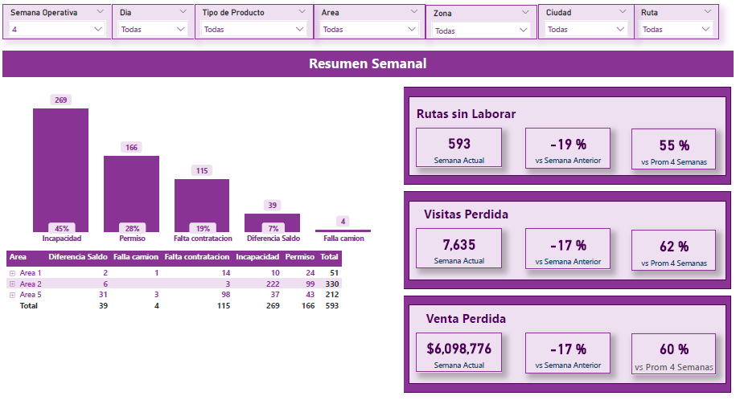

Utilized BeautifulSoup and Selenium to successfully scrape data from fbref website. Designed and developed an interactive dashboard featuring six distinct visualizations in Tableau to effectively evaluate top-performing players in offensive domains.

Developed a Power BI dashboard incorporating Go-To-Market KPIs sourced from three distinct data repositories. Conducted data cleaning and transformation utilizing Power Query , optimizing data quality and integrity for enhanced analysis.
Note: All atributes and metrics were modified due to data protection.
Utilized Jupyer Notebook to perform data analysis from Statcast to compare hitting performance between Ohtani and Trout. Conducted data visualization using seaborn and matplotlib to compare different aspects such as batting launch angle, batting launch speed, pitch speed and strike zone.

Implemented a k-means algorithm to proactively identify diabetes risk in patients, preceded by comprehensive exploratory data analysis for database comprehension.
Note: Data is not included due to data protection.